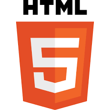
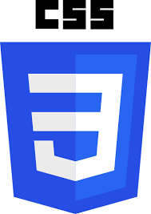
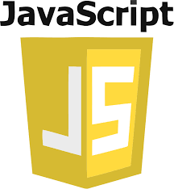
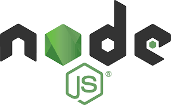
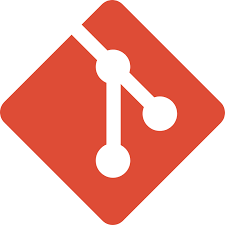
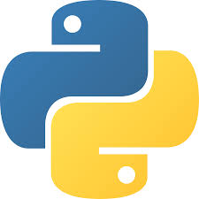
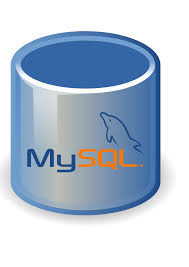
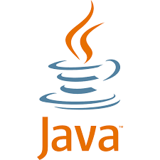

Skills
HTML
CSS
JavaScript
React
Node
Git/GitHub
MongoDB
python
MySQL
Java
Full-Stack Developer
I am a dedicated Computer Science and Engineering student who integrates rigorous academic training with practical, full-stack development expertise. I specialize in building robust, scalable, and secure applications, leveraging a strong theoretical foundation in algorithms and system design. My technical proficiency spans the entire software lifecycle, from designing responsive frontends with modern frameworks to developing reliable backends and managing infrastructure (Git, cloud platforms, Docker). I am driven by the opportunity to turn complex ideas into functional, innovative digital solutions.
A To-Do List Application designed to help users organize tasks efficiently. The app allows users to: Add, edit, and delete tasks Mark tasks as complete or pending Categorize tasks by priority or deadline Store tasks persistently so they remain available after closing the app Provide a clean, user-friendly interface for managing daily activities
Live DemoDeveloped a YouTube Clone frontend that replicates the core features of YouTube’s user interface. The app allows users to: Browse and search videos View video thumbnails and details Play videos with a responsive player Navigate through categories and recommendationsExperience a clean, responsive design across devices
Live DemoFenet Café is a fullstack web application built to manage a modern café’s digital presence and operations. The platform allows customers to browse menus, place online orders, reserve tables, and provide feedback, while administrators can manage inventory, track sales, and update offerings in real time.
GitHub RepoA lightweight JavaScript Quote Generator that displays random quotes with smooth UI interactions. Users can generate a new quote on click, copy it to the clipboard, and share via social platforms. The app supports dynamic styling, simple animations, and optional categories or authors for filtering.
Live Demo